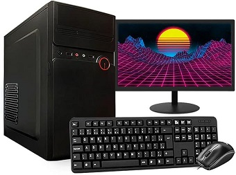

Orçamento Técnico

Realizar uma pesquisa de peças para montagem de um computador para a seguinte aplicação: programação front-end.
O computador deverá ter os seguintes componentes:
- Processador
Intel Core I5-2320 Processador 3 Ghz 6 Mb Smart Cache Box R$107,00
- Placa-Mãe
- Placa de Video
- Cooler + Dissipador
- Memória RAM
- HD / SSD
- Fonte ATX
- Gabinete
- Monitor
- Teclado
- Mouse
O Orcamento desponibilizado é de R$2.500
Realizar pesquisa em Dupla, colocar os itens nesta página organizados da forma que melhor achar, utilizando as tags html que conhecemos.
Ao final efetuar git add, commit e push, depois verificar se a página está publicada.